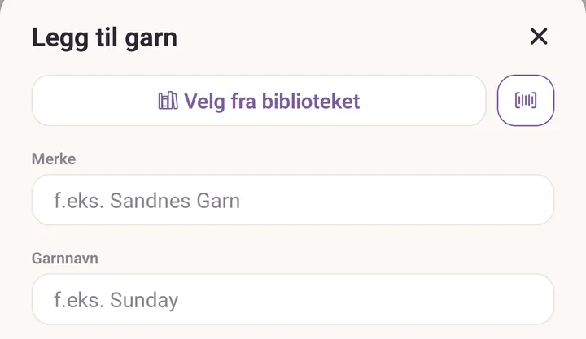
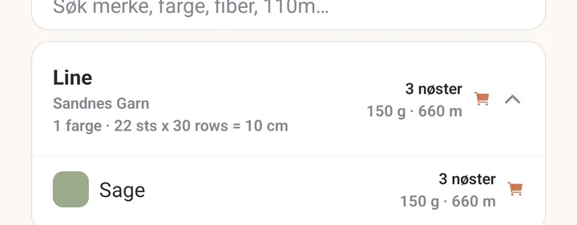
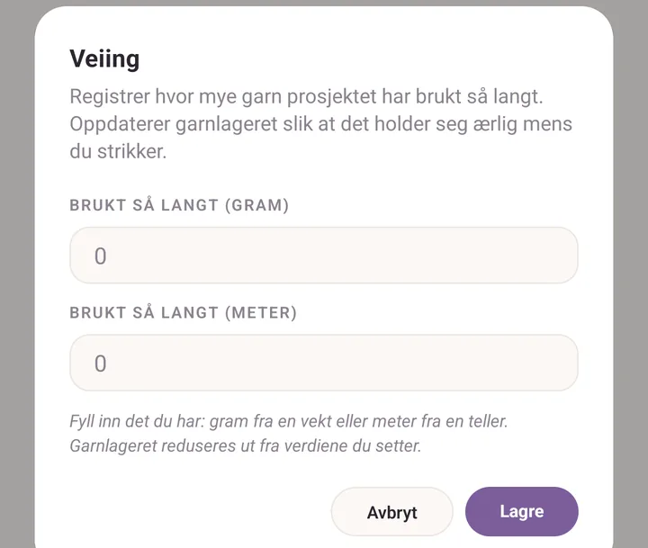
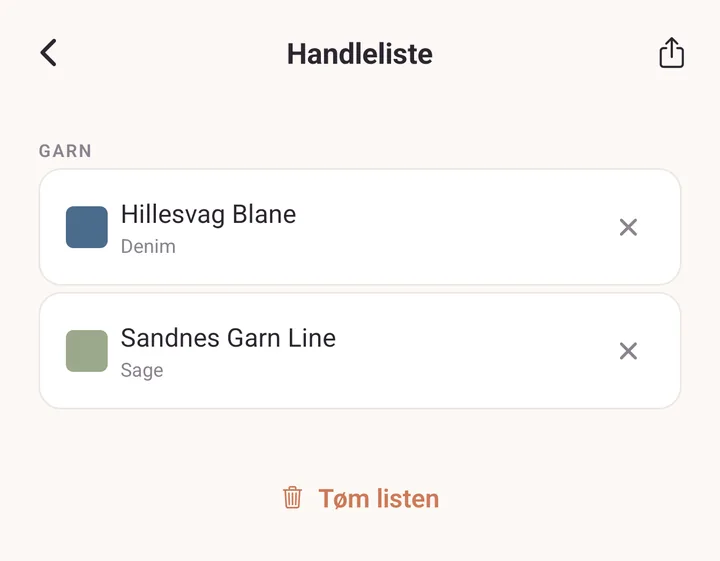

Veiledning: garnet ditt, inn og ut
Når du er ferdig, har du skannet en banderole inn i stashen, notert hva et prosjekt har spist så langt, og sendt en venn handlelisten din.
Før du begynner: den første skanningen ber om tilgang til kameraet, og viser en engangsmelding om at Strekkodeskanner fortsatt er eksperimentell. Gi tilgang til kameraet, trykk Skjønner, og fortsett. Del 2 trenger et prosjekt som garnet allerede ligger på, og en kjøkkenvekt.
1. Skann en banderole inn i stashen
- Trykk Stash, og se til at chipsen Garn er valgt.
- Trykk Legg til. Skjemaet Legg til garn åpner seg.
- Øverst i skjemaet, ved siden av Velg fra biblioteket, trykker du på strekkodeknappen.

Hold banderolen i ro inne i rammen på Skann et nøste. Kameraet lukker seg av seg selv i det øyeblikket det leser en kode.
Er det en farge Purl allerede vet at du har, får du Du har denne fargen. Trykk Legg til et nøste for å legge ett til på raden du allerede har, eller Nytt fargeparti for å føre denne banderolen som sin egen oppføring.
Ellers fyller skjemaet seg selv ut: merke, garnnavn, farge, tykkelse, fiber, meter og gram. Skriv inn Nøster du kjøpte og Fargeparti som står på banderolen.
Trykk Legg til i stashen. Den nye raden dukker opp under merket og garnnavnet sitt.

2. Vei garnet ned mens du strikker
- Trykk Prosjekter og åpne prosjektet du strikker på.
- Finn garnet i prosjektets garnliste og trykk på speedometerknappen på raden.
- I Veiing skriver du det vekten sier inn i Brukt så langt (gram), eller det garntelleren din sier inn i Brukt så langt (meter).
- Trykk Lagre.

- Gå tilbake til Stash. Antallet på garnet har gått ned, delvis brukte nøster og alt.
3. Bygg en handleliste og send den til en venn
- I Stash sveiper du et garnkort mot høyre til Handle vises, og trykker på det. Du kan også åpne garnet og trykke Legg til i handlelisten.
Sveip til høyre for Handle, til venstre for Slett.
- Et handlekurvikon dukker opp øverst i Stash med et antall på. Trykk på det.
- Se gjennom Handleliste. Trykk på krysset på det du har ombestemt deg om.
- Trykk på delingsikonet øverst og velg hvordan du vil sende den. Vennen din får en liste i ren tekst, så hvilken som helst meldingsapp holder.
- Vel hjemme igjen trykker du Tøm listen for å tømme listen. Garnet blir liggende i stashen, det er bare merkingen som går av.

Hvis det går galt
- Ingen banderole. Hopp over strekkodeknappen og skriv Merke, Garnnavn, Farge / fargevariant og Nøster selv. For et garn Purl allerede kjenner fyller det å velge navnet inn tykkelse og fiber for deg.
- Kameraet leser ingenting. Strekkoder på banderoler er små og blanke. Mer lys, og hold banderolen flat. Purl leser EAN, UPC, Code 128, Code 39 og QR.
- Skanningen fylte inn feil farge. En strekkode kan være festet til feil nyanse. Rett opp fargen i skjemaet før du lagrer, så retter appen opp det den husker for den koden.
- Antallet i stashen endret seg ikke etter en veiing. Purl trenger Gram / nøste eller Meter / nøste på garnet for å gjøre gram om til nøster. Åpne garnet, trykk Rediger, og fyll inn ett av dem.
Videre
- Stash for søk, filtre og alt stashen husker.
- Strekkoder og garnbiblioteket for hva skanneren vet og hvordan du retter den.